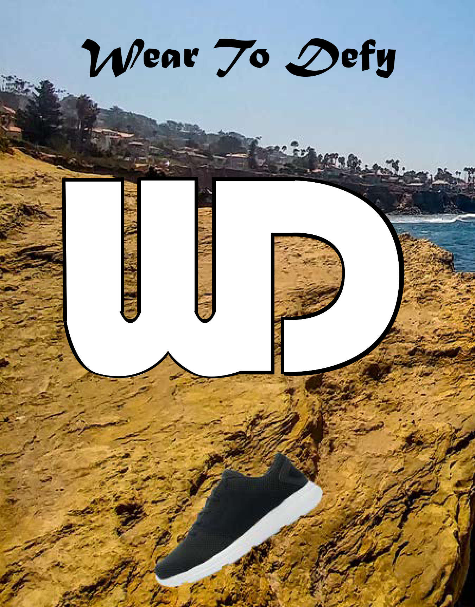
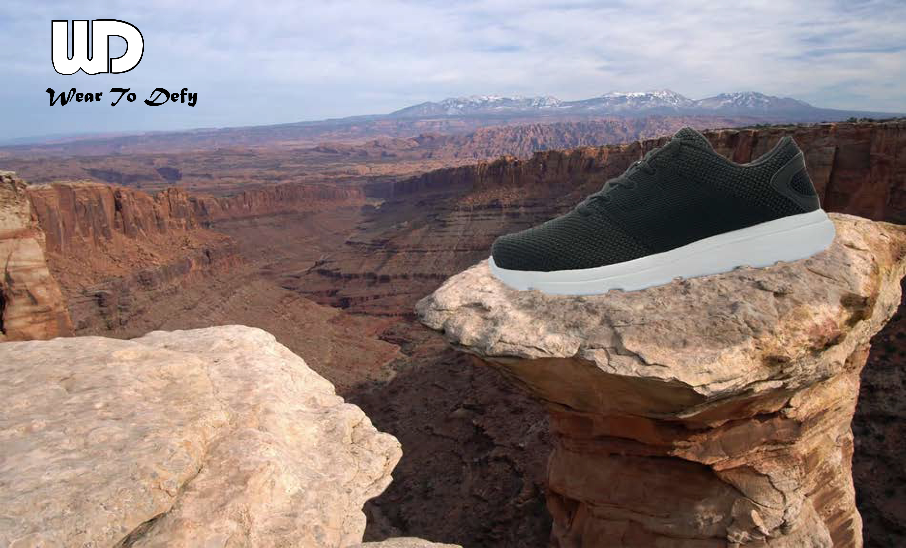
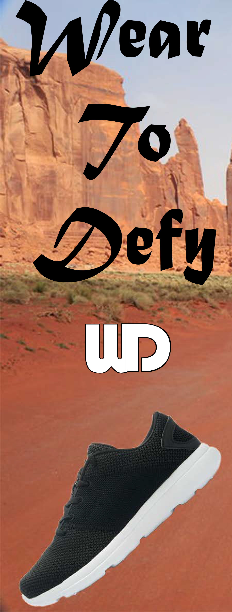

Jacob Batten is a college student at Seminole State College, majoring in Digital Media to become a Game Designer. He has taken classes in design and video fundementals. He plans to graduate Seminole State College with his AA and then go to Unversity Of Central Florida to further his education. Jacob has developed a few basic games in highschool and came in 2nd place for a game design competetion between multiple highschools. He currently wokrs at iBuild Academy where he teaches elementary and middle school age kids STEM related activities such as engineering, video production, and video game coding.
Web Development, User Interface Design, Video Editing, Javascript, Video Game Development, Customer Communication, HTML, Photoshop, After Effects, Illustrator
Adobe Photoshop, Illustrator, After Effects, Premeier Pro, GameMaker


